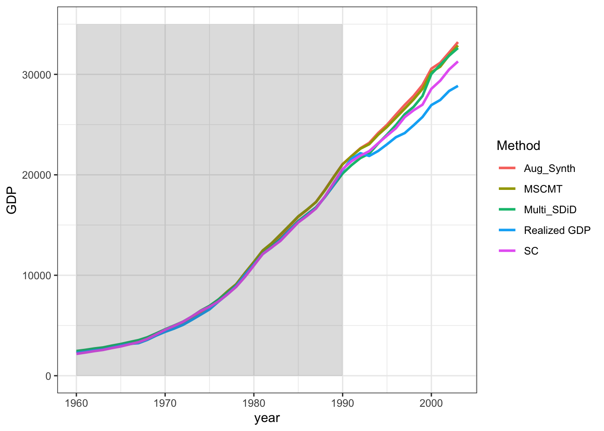

install.packages("MSCMT")
install.packages("Synth")
devtools::install_github("ebenmichael/augsynth")Compare Synthetic Control methods which allows multiple outcomes
library(MSCMT)
library(Synth)
library(augsynth)
library(multisynthdid)
library(tidyverse)data("german_reunification")
german_reunification$index <- as.integer(as.factor(german_reunification$country) )
german_reunification <- as.data.frame(german_reunification)Classical Synthetic Control
unit_ids <- unique(german_reunification$index)[-7]
dataprep_out <-
dataprep(
foo = german_reunification,
predictors = c("gdp","trade","infrate"),
dependent = "gdp",
unit.variable = "index",
time.variable = "year",
treatment.identifier = 17,
controls.identifier = unit_ids[unit_ids != 17],
time.predictors.prior = 1981:1990,
time.optimize.ssr = 1960:1989,
unit.names.variable = "country",
time.plot = 1960:2003
)
synth_out <- synth(dataprep_out)
X1, X0, Z1, Z0 all come directly from dataprep object.
****************
searching for synthetic control unit
****************
****************
****************
MSPE (LOSS V): 25490.84
solution.v:
0.8782577 0.1213023 0.0004399473
solution.w:
0.009213684 0.03014281 0.01528837 0.01577015 0.01249197 0.007024813 0.009557229 0.3023965 0.1640184 0.009600453 0.01275447 0.007048682 0.008689053 0.2884409 0.01233855 0.095224 MSCMT package
df_m <- listFromLong(german_reunification, unit.variable="index", time.variable="year", unit.names.variable="country")
# define the sum of all cases
treatment.identifier <- "West Germany"
controls.identifier <- setdiff(colnames(df_m[[1]]),
c(treatment.identifier))
times.dep <- cbind("gdp" = c(1960,1989),
"trade" = c(1960,1989),
"infrate" = c(1960,1989))
times.pred <- times.dep
mscmt_res <- mscmt(df_m, treatment.identifier, controls.identifier, times.dep, times.pred, seed=1)10:58:03: Number of 'sunny' donors: 16 out of 16
10:58:03: Unrestricted outer optimum (obtained by ignoring all predictors) is
10:58:03: FEASIBLE even when respecting the predictors.
Final rmspe: 0.03346181, mspe (loss v): 0.001119693
Optimal weights:
USA Austria Switzerland Japan
0.26457047 0.49918982 0.17248101 0.06375869 Augmented Synthetic Control
aug_syn <- augsynth( gdp + trade + infrate ~ W, index, year,
german_reunification, progfunc = 'none', scm = T )Multiple outcomes and one treatment time found. Running augsynth_multiout.summary(aug_syn)
Call:
augsynth_multiout(form = form, unit = !!enquo(unit), time = !!enquo(time),
t_int = t_int, data = data, progfunc = "none", scm = ..2)
Overall L2 Imbalance (Scaled):0.450 (0.296)
Average ATT Estimate:
Outcome Estimate lower_bound upper_bound p_val Pre.RMSE
1 gdp -2360.7643331 NA NA 0 310.710322
2 trade 8.0726848 NA NA 0 7.290110
3 infrate -0.4014653 NA NA 0 1.930879# Treatment
augsyn_tau = predict(aug_syn,att=T)multi_sdid <- multi_sdid( gdp + infrate + trade ~ 1, 'W', 'country', 'year', german_reunification )
summary.multisynthdid(multi_sdid)$estimate
[1] "multi_synthdid_obj"
$tau
gdp infrate trade
Avg. Treatment -1526.459 1.397776 0.3985817
SE 1310.014 1.473123 4.3954268
$dimensions
[,1]
No. Treated units 1.000
No. Control pool 16.000
Effective no. controls 8.668
No. Post-treatment periods 14.000
No. Pre-treatment periods 30.000
Effective no. pre-treatment periods 1.000
No. Outcomes 3.000msdid_curve <- multi_synthdid_curves(multi_sdid$tau, complete = T)Comparison of GDP
df_plot <- german_reunification %>%
filter( country == 'West Germany' ) %>%
arrange( year ) %>%
rename( `Realized GDP` = gdp )
df_plot <- cbind(df_plot,
tibble(SC = dataprep_out$Y0plot %*% synth_out$solution.w ),
tibble(MSCMT = as.vector( mscmt_res$data.synth$gdp) ),
tibble(Aug_Synth = df_plot$`Realized GDP`-augsyn_tau[,1] ),
tibble(Multi_SDiD = df_plot$`Realized GDP` - msdid_curve$tau_curve[1,]) )
df_plot2 <- df_plot %>%
select( year, `Realized GDP`, SC, MSCMT, Aug_Synth, Multi_SDiD ) %>% #
pivot_longer(!year, names_to = 'Method', values_to = 'GDP' )
ggplot( df_plot2, aes( x = year, color = Method, y = GDP )) +
geom_line( linewidth = 1 ) +
annotate("rect", xmin = 1960, xmax = 1990, ymin = 0, ymax = 35000,
alpha = .2)+
theme_bw()